Imagem: Asmodee Canada, distribuidora da Awaken Realms (render de produto da página oficial da Asmodee Canada; o site da Awaken Realms só tinha fotos de protótipo de 725 x 500 px)Campanha cooperativa · Construção de baralho
Como jogar Dragon Eclipse
Para quem nunca jogou1 a 2 jogadores120 a 150 min por Cenário12+Manual oficial em inglês
· Redação Elite Boardgamers
Resumo em 1 minuto
Você lê o Diário de Aventura, explora mapas e decide a história; nos Combates, um dos seus Mystlings luta com cartas de Ação para vencer ou Domar o Inimigo, e os Domados e as cartas novas reforçam a campanha.
Na Aventura, ler trechos é de graça; o que custa é o Tempo, que desce a cada escolha marcada com a ampulheta até virar o Evento.
No Combate, você resolve uma carta por turno e ganha o Poder da posição dela; a posição 4 paga mais, e o Poder compra as Ações Bônus.
O baralho do Inimigo fica virado para cima: você vê o próximo golpe dele antes de jogar e se prepara para ele.
Como você aprende: 5 etapas, da mesa montada à contagem de pontosLeitura do essencial: cerca de 13 min
À vista, só o essencial para jogar. O que abre com + é explicação, exemplo, exercício ou regra de caso especial: abra quando precisar.
Montar a mesa passo a passo
Dragon Eclipse é uma campanha: a caixa é organizada uma vez, e cada sessão continua de onde a anterior parou. A montagem tem quatro momentos, na ordem do manual: ao abrir a caixa (Start here, p. 1 e 2), no começo de cada sessão (p. 4 a 7), ao abrir um mapa de Local p. 12 e a cada Combate p. 16 e 17. Nas figuras, os números em círculo são do manual; as legendas usam os passos deste guia.
Componentes da caixa básicap. 3
Peça
Quantidade
Diário de Aventura (Adventure Journal), livro de Locais (Location book), livro de Arenas (Arena book), livreto Start here, folha de Status (Status Sheet), bandeja de Mystling (Mystling tray), porta-cartas do Mapa-múndi (World Map cardholder)
Cartas de Ação: de Mystling, Iniciais (Starting), Progresso A e B (Advancement), Elementais, Elementais metalizadas, Fadiga (Fatigue)
180, 20, 30, 30, 120, 10 e 5
Cartas pequenas: Ataque do Inimigo (Enemy Attack; metade marcada para 2 jogadores), Item, Equipamento (Equipment), Segredo (Secret), Nível (Tier), Mapa-múndi, Corrupção (Corruption), Corrupção Maior (Major Corruption); Artefato e Mistério só no modo Roguelite
24, 23, 20, 73, 30, 17, 6, 6; 10 e 13
Divisórias (grandes e pequenas), envelopes de pacote (Booster), figuras de papelão e bases
A Edição Especial troca as figuras por miniaturas e as fichas Elementais por acrílico, e traz os pacotes lacrados p. 3.
O que muda com 2 jogadores. O jogo é para 1 ou 2 pessoas, em cooperação p. 4:
1 jogador
2 jogadores
Mystlings no Combate
Um dos 2 escolhidos para o Cenário
Cada um controla o seu p. 6
Mapa de Arena
O sem o ícone de 2 jogadores
O com o ícone; sem espaço para a ficha do Inimigo, as cartas dele ficam ao lado da Arena p. 14 e 17
Cartas de Ataque do Inimigo e de Ajuda
As sem o ícone
As com o ícone; Ataques com o mesmo símbolo são sorteados entre as que têm o símbolo, porque não são iguais p. 17
Corrupção Maior
Não usa
A carta indicada pelo Diário vai para o Inimigo e aumenta os atributos dele p. 17 e 32
Casas iniciais e mesa
Casa II
Casas II e III, jogadores em lados opostos; cada um com baralho, 4 posições e descarte do seu lado p. 16 e 17
Ficha de Provocação
Não usa
Indica quem joga primeiro e o alvo do Inimigo (p. 17 a 19)
Ficha de Decisão
Não usa
Desempata as escolhas da Aventura e passa ao outro; Prata, Essência, Itens, Equipamentos, Segredos e status são dos dois p. 8 e 9
Uma vez só: organizar a caixa (Start here, p. 1 e 2; de 30 a 40 minutos)
Mystlings (pacotes 1.1 a 1.3 e 2.1 a 2.3). Sem mudar a ordem e sem as cartas separadoras, ponha cada divisória de Mystling na bandeja e, atrás dela, as cartas com o nome dele (o número no canto tem "A" na frente e "B" no verso). Depois, a divisória Grupo (Party), vazia, e as 35 cartas de Arena, em ordem, atrás da divisória de Arena.
Outras cartas de Ação (pacotes 3.1 e 3.2). Fadigas soltas na bandeja; Progresso A embaralhadas atrás de Baralho de Progresso (Advancement deck); Progresso B embaralhadas atrás de Cartas Bloqueadas (Locked cards); as 20 Iniciais (marca S) em dois baralhos de 10, uma cópia de cada carta em cada, atrás de Cartas Desbloqueadas (Unlocked cards).
Pacotes. Na edição comum, 12 cartas dos pacotes 4.1 e 4.2 em cada um dos 10 envelopes, pela lista do livreto, e uma metalizada do pacote 5 em cada envelope, até o pacote 5 ficar vazio. Errata do envelope 3: Storm (2) no lugar de Blizzard (2) (FAQ).
O resto (pacotes 6 e 7). Cartas de Ajuda, de Mistério e as cartas pequenas na bandeja; divisórias Enciclopédia de Mystlings (Mystling Encyclopedia), Removidas (Removed), Inventário (Inventory) e Combates Aleatórios (Random Combats), vazias.
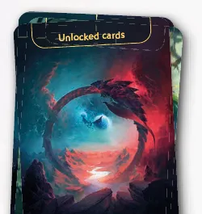
A divisória Cartas Desbloqueadas, atrás da qual ficam os dois baralhos Iniciais (passo 2). Ilustração: manual oficial Awaken Realms (Start here, p. 1)
No começo de cada sessão (p. 4 a 7)
Componentesp. 5. Baralhos de Itens e de Equipamentos embaralhados; baralho de Segredos sem mudar a ordem; os três livros, a folha de Status, a bandeja e as fichas. Com 2 jogadores, a ficha de Decisão vai para um jogador sorteado p. 8.
Inventáriop. 5. Se houver cartas, Prata ou Essência atrás da divisória Inventário, ponha à sua frente.
Primeiro Cenário: pare aqui. Nele, os passos 8 a 10 são pulados p. 4: você escolhe 1 Mystling inicial, Young Emberling ou Young Iceling, e pode trocar no começo do segundo Cenário p. 4. Leia as regras de Aventura do livreto e abra o Diário no trecho A0, que diz o resto (Start here, p. 3 e 9).
Mapa-múndip. 5 e 6. Se quiser, visite cartas Exploradas (Explored), as que mostram um trecho "Z" do fim do Diário, para comprar, Domar ou saber mais da história. Depois escolha uma carta Inexplorada (Unexplored) com nome de Cenário e leia o trecho dela. A partir do terceiro Cenário, lida a introdução, você pode trocar de Cenário.
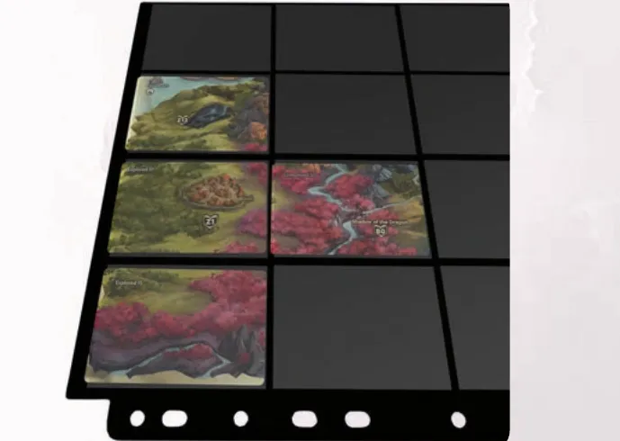
O porta-cartas do Mapa-múndi depois do primeiro Cenário, com cartas encaixadas (passo 8). Ilustração: manual oficial Awaken Realms p. 5
Dois Mystlingsp. 6. Escolha 2 dos que estão atrás da divisória Grupo, de elementos principais diferentes (o elemento principal é o ícone grande da carta de Atributos). Pegue de cada um: 1 carta de Atributos, 1 de Habilidade, 6 de Ação e 1 de Missão, se houver. Com 2 jogadores, cada um escolhe 1.
Baralhosp. 7. Monte um baralho de 16 cartas de Ação para cada Mystling (regras na etapa 5) e guarde cada um, com a carta de Atributos e a de Habilidade, num bolso da bandeja.
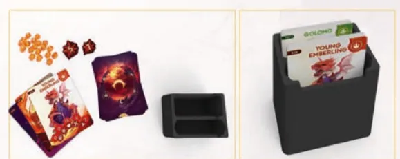
A bandeja de Mystling: o que pode ir num bolso (à esquerda) e um Mystling pronto (à direita) (passos 9 e 10). Ilustração: manual oficial Awaken Realms p. 7
Ao abrir um mapa de Localp. 12
Abra o mapa que o Diário indicar ("Open Map X") no livro de Locais, deixando só ele visível.
Evento e Tempo. Ponha o Segredo indicado virado para baixo, sem olhar, no espaço de Evento (Event slot), e o marcador de Tempo na casa de número indicado da trilha do Tempo (Time track), com o lado (vermelho ou azul) que o Diário mandar. Depois o Diário diz "Begin the Exploration".
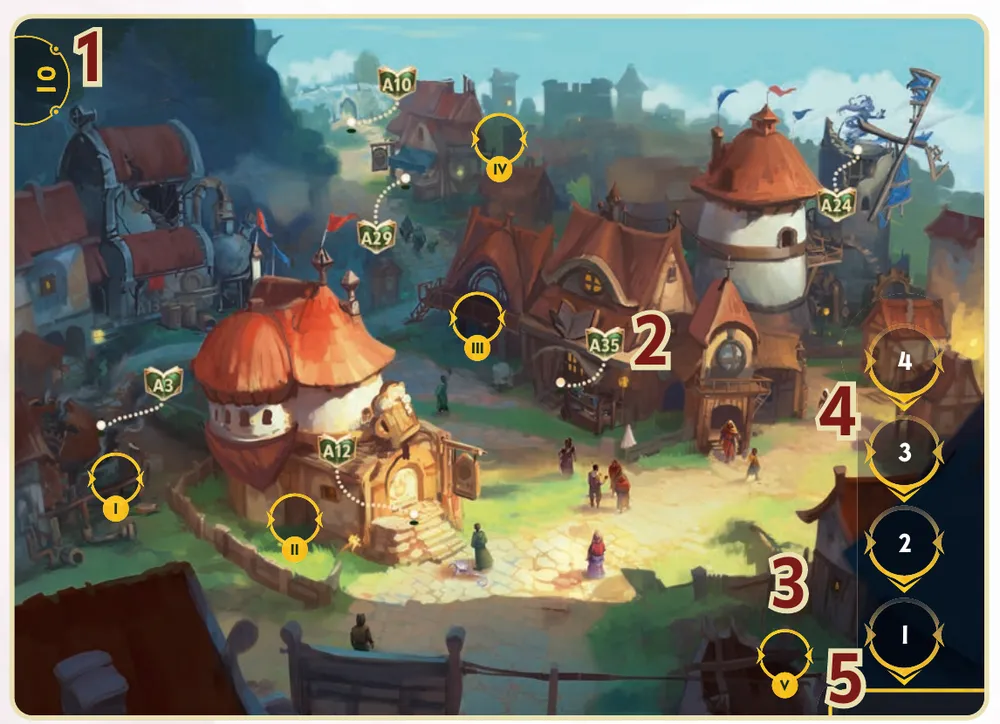
Um mapa de Local: número do mapa (1), trechos (2), encaixes com algarismos romanos (3), trilha do Tempo (4) e espaço de Evento (5) (passos 11 e 12). Ilustração: manual oficial Awaken Realms p. 12
A cada Combate (p. 16 e 17; o Diário, ou a carta de Nível num Combate Aleatório, diz quais cartas usar)
Arena. Abra o livro de Arenas no mapa indicado e ponha a carta de Arena indicada no espaço dela; faça o "Setup" da carta, se houver.
Fichas. Dano, fichas Elementais, Poder e condições perto da Arena.
Inimigo. Figura na casa I. Pegue as cartas listadas (Atributos, Habilidade do Inimigo e, se houver, Domar) atrás da divisória dele. No lado B da carta de Habilidade do Inimigo estão a posição do marcador de Habilidade Especial e os símbolos das cartas de Ataque do baralho dele: pegue-as entre as cartas pequenas, que servem a todos os Inimigos, embaralhe e deixe viradas para cima no espaço do baralho do Inimigo. Faça a "Additional setup", se houver. Volte a carta ao lado A e forme a ficha do Inimigo com Atributos e Habilidade; a carta de Domar fica ao lado, legível.
Seu Mystling. Um dos 2 do Cenário, na casa II. A carta de Atributos e a de Habilidade, lado a lado, formam a ficha do Mystling; ponha nela o dano e o Poder do bolso dele.
Cartas de Ação. Embaralhe o baralho, ponha virado para baixo no espaço dele e compre 4, uma a uma, começando pela posição 4.
Ajuda. A carta de palavras de Combate (Combat tags, o resumo das palavras-chave) e a do elemento principal do seu Mystling.
Troca de mão (Mulligan), se quiser, uma vez: separe as 4 cartas, compre 4 novas e embaralhe as separadas no baralho. Com 2 jogadores, no fim da troca de mão, escolham quem recebe a ficha de Provocação.
Modificadores que o Diário listar; alguns mudam passos anteriores.
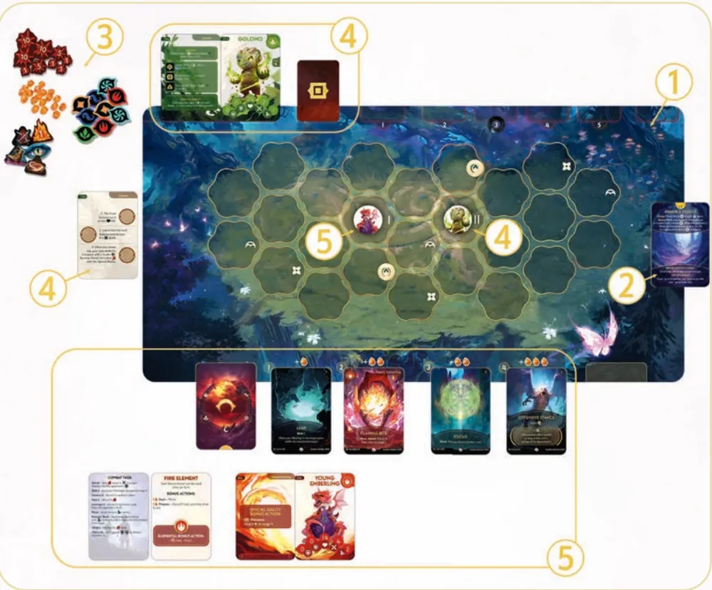
Combate de 1 jogador montado: Arena (1), carta de Arena (2), fichas (3), Inimigo (4) e seu Mystling com as cartas nas posições (5) (passos 13 a 17). Ilustração: manual oficial Awaken Realms p. 16
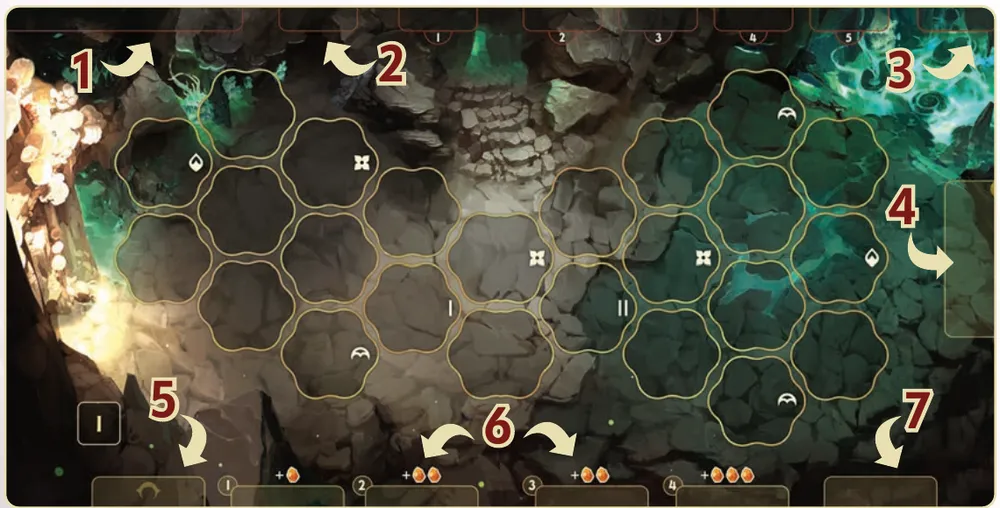
As partes do mapa de Arena: ficha do Inimigo (1), baralho do Inimigo com as cinco posições à direita (2), descarte do Inimigo (3), carta de Arena (4), seu baralho (5), as quatro posições de Ação com o Poder de cada uma (6) e seu descarte (7). Ilustração: manual oficial Awaken Realms p. 14
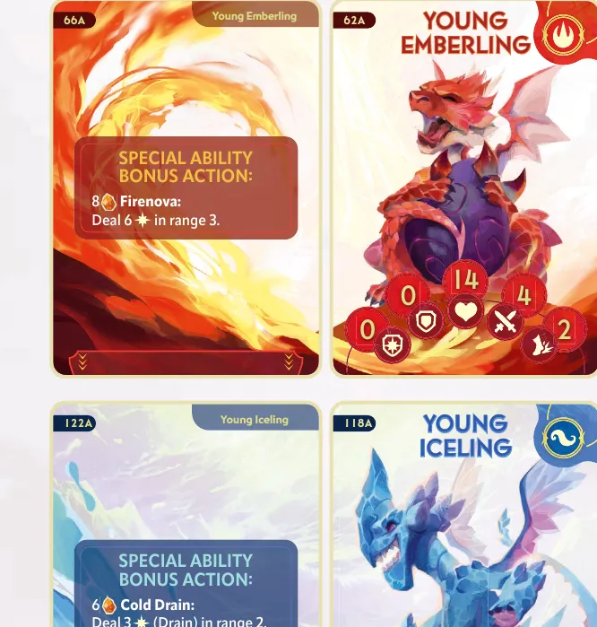
Fichas de Mystling: o Young Emberling em cima e o Young Iceling embaixo, cada um com a carta de Habilidade à esquerda e a de Atributos à direita, com Vontade, Defesa, Vida, Força e Agilidade (passo 16). Ilustração: manual oficial Awaken Realms (Start here, p. 11)
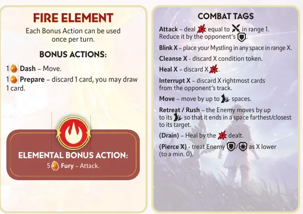
As cartas de Ajuda do elemento Fogo e das palavras de Combate (passo 18). Ilustração: manual oficial Awaken Realms (Start here, p. 11)
O que volta para a caixa. Depois de cada Combate, o Diário manda limpar a Arena (etapa 4). Ao salvar, o que só se faz no fim de um Cenário (não há como salvar no meio): os 2 Mystlings, com suas cartas de Ação, atrás de Grupo; as outras cartas de Ação atrás de Cartas Desbloqueadas; até 2 Equipamentos, até 3 Itens, Segredos, Essência e Prata atrás de Inventário; o resto na caixa p. 26.
Antes de começar, confira: Inimigo na casa I com o marcador na posição certa e o baralho dele virado para cima; seu Mystling na casa II com o dano e o Poder guardados; 4 cartas nas posições, a primeira na posição 4.
Quem começa. No Combate, o jogador joga primeiro e os turnos se alternam com o Inimigo; com 2 jogadores, veja a etapa 4 p. 18. Na Aventura não há turnos p. 12.
Ao montar o Combate, onde vai a primeira carta de Ação que você compra?
As 4 cartas entram uma a uma, começando pela posição 4 (p. 17; Start here, p. 11).
Comece a jogar em 6 minutos
Meta: em 6 minutos de leitura, saber como o primeiro Cenário começa e jogar o seu primeiro turno de Combate sem abrir o manual.
A ideia do jogo
Você é um domador (Tamer) que cria laços com Mystlings, criaturas que controlam os elementos. Cada sessão joga um Cenário (Scenario), que alterna a Aventura, em que você lê o Diário de Aventura e escolhe o que fazer, e o Combate, em que um dos seus Mystlings luta contra outro numa Arena, com cartas de Ação, para vencê-lo ou Domá-lo (Tame): cumprir as condições da carta de Domar dele para que passe a lutar ao seu lado. Não dá para perder um Cenário: vitórias e derrotas mudam a história p. 4 e 25.
Palavras do jogo
Trecho (Script): bloco numerado do Diário, como A12; você segue tudo o que ele manda p. 8 e 12.
Ficha do Mystling: carta de Atributos mais carta de Habilidade. Atributos: Vontade (Willpower), Defesa (Defense), Vida (Health, o coração: o dano que ele aguenta), Força (Strength) e Agilidade (Swiftness, casas por movimento) p. 15.
Posições: os quatro espaços de carta de Ação à direita do seu baralho, de 1 a 4; cada uma dá 1, 2, 2 e 3 de Poder (p. 14 e 19; Start here, p. 12 e 14).
Poder (Power): ganho ao resolver cartas e gasto em Ações Bônus (Bonus Actions), ações extras de uma vez por turno cada; máximo 10 por Mystling p. 19 e 20.
Habilidade Especial (Special Ability): a Ação Bônus própria do Mystling, na carta de Habilidade p. 15 e 20.
Atacar (Attack), Causar (Deal), Mover (Move) e Acionar (Trigger): as palavras das cartas, explicadas na tabela da etapa 3; Acionar só uma vez por turno p. 18 e 19.
Monte a mesa
A montagem completa, com figuras, está em Montar a mesa passo a passo, no alto da página. Para a primeira sessão:
Organize a caixa uma vez (Start here, p. 1 e 2).
Abra o Diário no trecho A0 e siga o que ele manda; ele avisa quando abrir um mapa e quando começa o Combate (p. 4; Start here, p. 9).
O primeiro Combate é um tutorial montado pelo livreto Start here: Arena 2, carta de Arena 35, o Inimigo Frightened Windraiser (cartas 169 e 170) e o seu Mystling na casa II, com o baralho numa ordem fixa e 1 Poder de bônus (Start here, p. 10 e 11).
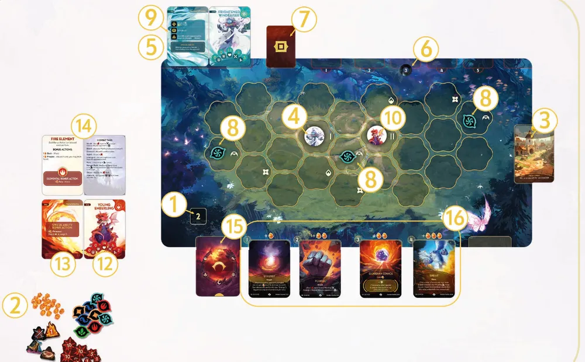
O primeiro Combate montado para o Young Emberling; os números são os passos do livreto Start here. Ilustração: manual oficial Awaken Realms (Start here, p. 10)
Seu primeiro turno
Antes do Combate, a Aventura: na Exploração (Exploration) de um mapa, você escolhe qual trecho visível ler, e ler é de graça; só algumas opções gastam Tempo p. 12. O primeiro Combate chega quando o Diário manda.
No Combate, o seu turno tem cinco passos p. 18 e 19:
Ações Bônus, se quiser.
Resolva uma carta de Ação de qualquer posição: ganhe o Poder da posição, faça o efeito de cima para baixo e da esquerda para a direita, e ponha a carta virada para cima no seu descarte.
Ações Bônus, se quiser (cada uma só uma vez por turno).
Compre: deslize as cartas que sobraram para a direita, enchendo as posições vazias, e compre para as que ficarem vazias, da direita para a esquerda.
Fim do turno: efeitos de fim de turno e descarte de 1 ficha de cada condição; então joga o Inimigo.
O baralho do Inimigo fica virado para cima: o símbolo da carta de cima diz o que ele fará no próximo turno, pela carta de Habilidade dele p. 17 e 22. Atacar causa a sua Força menos a Defesa do oponente, a alcance 1; Causar X causa X menos a Vontade dele p. 19.
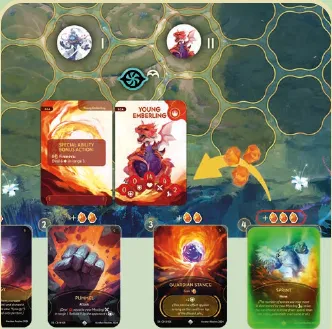
Primeiro turno do tutorial: o Young Emberling escolhe Sprint na posição 4 e recebe o Poder impresso acima dela. Ilustração: manual oficial Awaken Realms (Start here, p. 12)
Ainda não precisa saber
Testes, Tempo e Eventos: etapas 1 e 2. Passivos, aprimoramentos e as outras palavras: etapa 3. O turno do Inimigo, Avançar, Recuar, Domar, condições e elementos: etapa 4. Pacotes, construção de baralho e Mapa-múndi: etapa 5.
Como a partida acaba
O Combate acaba na hora em que alguém chega ao dano igual ou maior que a Vida (você perde ou vence) ou quando você cumpre todas as condições da carta de Domar; a carta de Arena diz qual trecho ler em cada caso p. 18 e 25. O Cenário acaba quando o Diário diz que você chegou ao fim dele; a campanha tem 12, de A a L p. 8.
Prefere ver? Partida resumida do primeiro Cenário, no canal Duque Board Games; ela mostra parte da história desse Cenário. Ele complementa este guia; em caso de diferença, vale o manual.
DRAGON ECLIPSE - Gameplay resumida (CENARIO 1 - PARTE 01), canal Duque Board Games · abrir no YouTube
0Antes de tudo: o que é este jogoOpcional
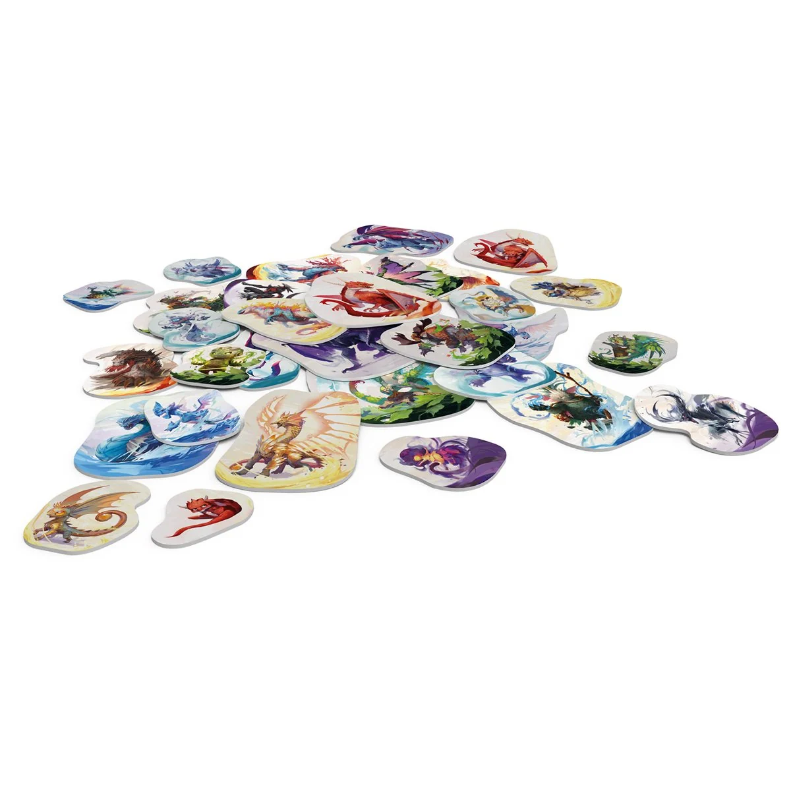
Imagem: Asmodee Canada, distribuidora da Awaken Realms (render de produto da página oficial da Asmodee Canada; o site da Awaken Realms só tinha fotos de protótipo de 725 x 500 px)Abrir esta seção
Uma campanha cooperativa para 1 ou 2 pessoas, contada por um livro de trechos numerados, com batalhas de cartas numa grade de casas hexagonais. Cada Cenário leva de 2 a 2,5 horas e é jogado uma vez só p. 4. A caixa também tem um modo de duelo (PvP) e um modo Roguelite, fora da campanha e fora deste guia p. 27 e 28.
1Como este guia ensinaOpcional
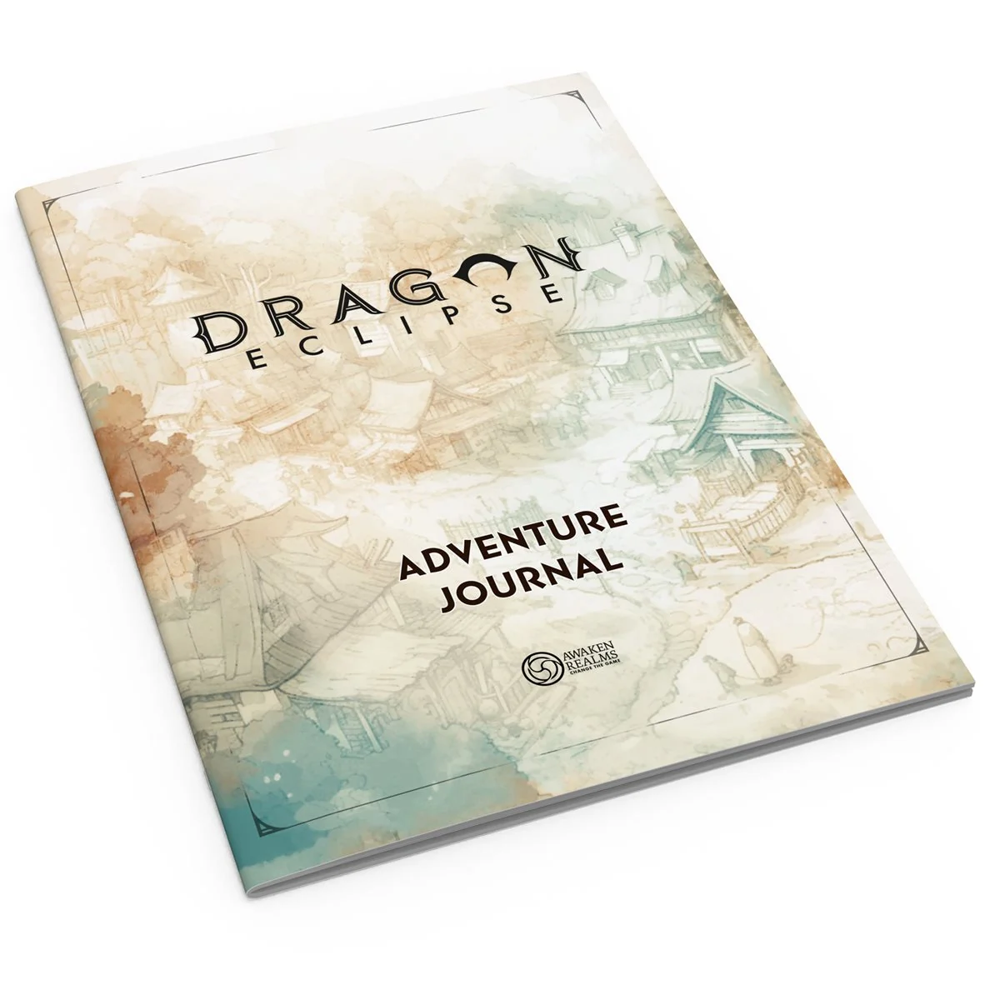
Imagem: Asmodee Canada, distribuidora da Awaken Realms (render de produto da página oficial da Asmodee Canada; o site da Awaken Realms só tinha fotos de protótipo de 725 x 500 px)Abrir esta seção
Cinco etapas: Aventura e Exploração; Testes; o seu turno de Combate; o Inimigo e o fim do Combate; entre um Cenário e outro. Cada uma tem passo a passo, exemplos e tarefas de múltipla escolha; casos especiais ficam em regras adicionais.
2Etapa 1: Aventura, trechos e Exploração
Por que funciona assim
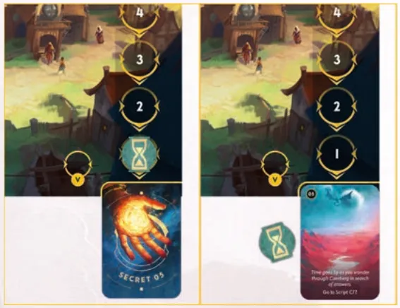
A trilha do Tempo: o marcador sai da casa 1 para a carta de Evento (Segredo 05) e, ao continuar a Exploração, o Evento é virado. Ilustração: manual oficial Awaken Realms p. 13
O lado do marcador de Tempo avisa o que vem: no lado vermelho, o Evento encerra a Exploração; no outro lado, ele muda algo no mapa sem encerrar p. 13.
Recompensas e perdas da Aventurap. 9, 10 e 35
O que
Regra
Passa para o próximo Cenário?
Dano
Você escolhe o Mystling que recebe; fora do Combate nenhum pode ficar com dano igual ou maior que a Vida, e o excesso que nenhum aguenta é ignorado
Não
Curar X (Heal)
Tira X dano, dividido entre os Mystlings como quiser
Não se aplica
Fadiga
Carta negativa que entra no baralho do Mystling que você escolher; no máximo 5 no total. Sem Fadiga disponível, ganhe 5 dano no lugar
Não
Poder
Vai para o bolso do Mystling e é usado no próximo Combate; máximo 10 por Mystling
Não
Prata (Silver)
Moeda; máximo 10
Sim
Essência (Essence)
Para Domar fora do Combate, a partir do segundo Cenário; máximo 6
Sim
Equipamento
Compre do topo; máximo 2
Sim
Item
Compre do topo; máximo 3
Sim
Segredo (Secret)
Carta da história, pelo número; sem limite
Ver abaixo
Sobre a edição: Quais Segredos passamRegra adicional: Limite de Equipamentos e ItensRegra adicional: Os quatro tipos de SegredoRegra adicional: Bloquear e desbloquear trechosRegra adicional: Combate no meio da ExploraçãoRegra adicional: Símbolos de EquipamentoVer um exemplo resolvidoPratique esta etapa: exercícios com respostas
3Etapa 2: Testes
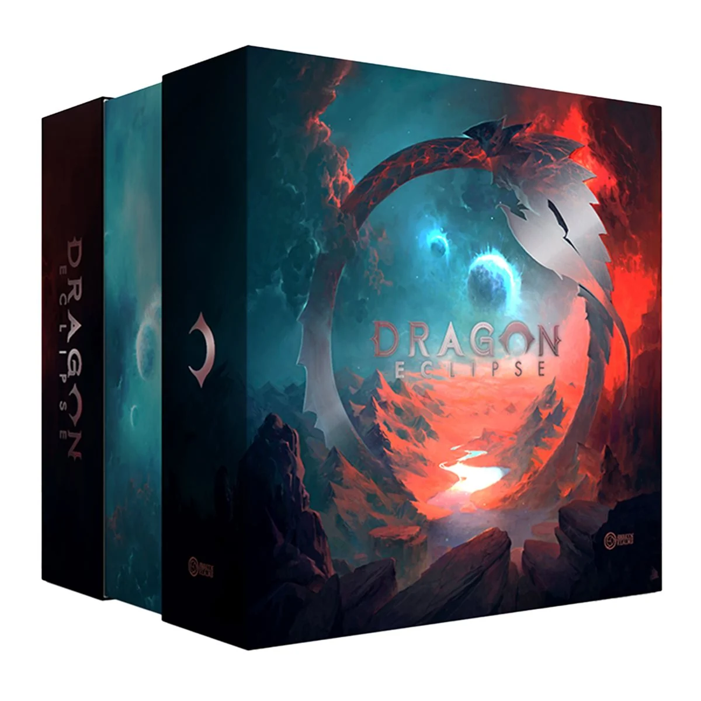
Imagem: Asmodee Canada, distribuidora da Awaken Realms (render de produto da página oficial da Asmodee Canada; o site da Awaken Realms só tinha fotos de protótipo de 725 x 500 px)Por que funciona assim
Durante o Teste, você pode usar o efeito dos seus Itens e Equipamentos com o momento "Test" p. 10 e 11. Baralho de Itens vazio: embaralhe o descarte e forme um novo p. 11.
Regra adicional: Bônus de Equipamento no TesteVer um exemplo resolvidoPratique esta etapa: exercícios com respostas
4Etapa 3: O seu turno de Combate
Por que funciona assim
Palavras básicasp. 18, 19 e 36
Palavra
O que faz
Alcance
Distância máxima em casas; conta-se através de qualquer coisa; a sua própria casa conta como dentro de qualquer alcance
Mover (Move)
Até a Agilidade, uma casa vizinha de cada vez; "Mover +1" soma 1 neste movimento
Atacar (Attack)
Oponente a alcance 1: sua Força menos a Defesa dele, mínimo 0. "Atacar +X": some X à Força neste Ataque
Causar X a alcance Y (Deal)
Oponente ao alcance: X menos a Vontade dele, mínimo 0. "Para cada... cause X": some tudo e subtraia a Vontade uma vez
Posição X (Slot X)
Efeito extra se a carta está na posição X; carta resolvida fora das posições tem posição 0
Acionar (Trigger)
Uma vez por turno: resolva outra carta das suas posições, sem ganhar o Poder dela, e descarte-a; depois a carta que acionou é encerrada e descartada
Curar X (Heal)
Tire X dano da sua ficha
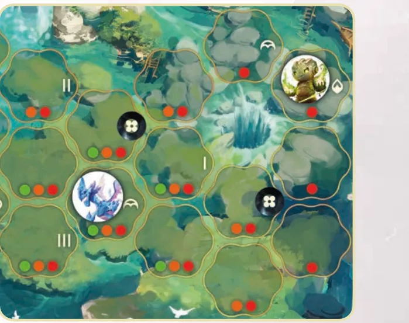
Alcance do Young Iceling: os pontos são cumulativos; verde marca as casas a alcance 1, laranja as que estão até alcance 2 e vermelho as que estão até alcance 3. Ilustração: manual oficial Awaken Realms p. 18
Ações Bônusp. 19 e 20. Pagas com Poder, antes ou depois da carta, cada uma só uma vez por turno. As comuns, nas cartas de Ajuda: Arrancada (Dash: 1 Poder, Mover) e Preparar (1 Poder: descarte uma carta de uma posição, deslize as cartas para a direita e, se quiser, compre uma para a posição vazia mais à direita). Cada elemento tem uma Ação Bônus Elemental, só para Mystlings com aquele elemento principal (a de Fogo é Fúria, Fury: 5 Poder, Atacar). A Habilidade Especial está na carta de Habilidade (a do Young Emberling é Firenova: 8 Poder, causar 6 a alcance 3).
Regras de ouro do Combatep. 18. O texto da carta vale mais que o manual. Efeitos ao mesmo tempo: você escolhe a ordem, inclusive os do Inimigo. Quando o Inimigo tem mais de uma opção, você escolhe. Nenhuma figura entra em casa com outra figura. O Inimigo é o seu oponente para os seus efeitos, e você é o oponente dele.
Regra adicional: Efeito passivo (Passive)Regra adicional: Aprimoramento (Upgrade)Regra adicional: Baralho vazioRegra adicional: Carta FadigaVer um exemplo resolvidoPratique esta etapa: exercícios com respostas
5Etapa 4: O Inimigo, o fim do Combate e Domar
Por que funciona assim
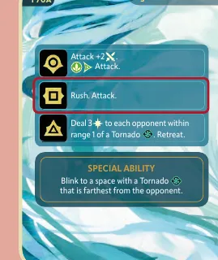
A carta de Habilidade do Frightened Windraiser: um efeito para cada símbolo e a Habilidade Especial embaixo. Ilustração: manual oficial Awaken Realms (Start here, p. 13)
Movimento do Inimigop. 22, 23 e 36
Palavra
O que faz
Avançar (Rush)
Anda até a Agilidade dele para terminar o mais perto possível de você (a alcance 1, se der), com o mínimo de passos; já a alcance 1, não se move
Recuar (Retreat)
Anda para terminar o mais longe possível de você, com o mínimo de passos; já no ponto mais longe, não se move
Saltar X (Blink)
Põe a figura numa casa vazia a alcance X; não é Mover. O efeito diz se o Inimigo salta para perto ou para longe, e ele termina o mais perto ou o mais longe possível, como em Avançar e Recuar
Empate entre casas: você escolhe para onde ele vai p. 18, 22 e 23.
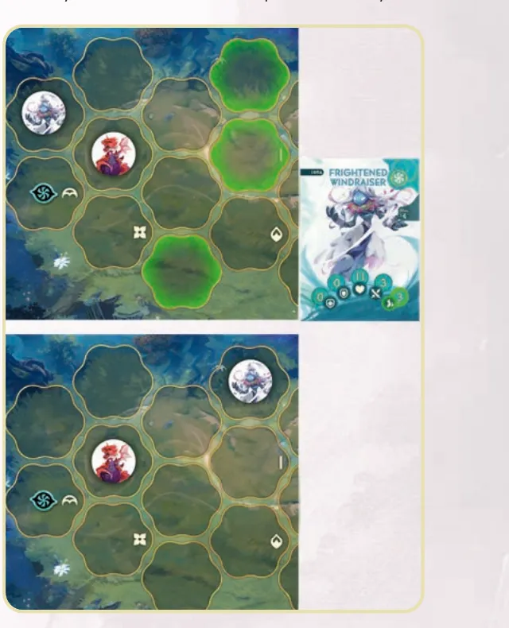
Recuar: o Frightened Windraiser, com Agilidade 3, tem três casas igualmente longe do Young Emberling, e o jogador escolhe a de cima. Ilustração: manual oficial Awaken Realms p. 22Regra adicional: Baralho do Inimigo vazio
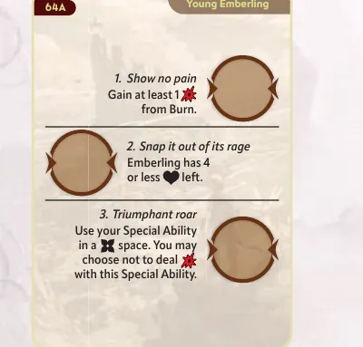
Carta de Domar do Young Emberling, com três condições em ordem e um espaço para a ficha A ao lado de cada uma. Ilustração: manual oficial Awaken Realms p. 25Sobre a edição: Domar e dano letal no mesmo efeitoRegra adicional: Mystling DomadoRegra adicional: RetratosRegra adicional: DesistirRegra adicional: Limpar a ArenaRegra adicional: Vantagem de elemento
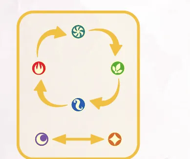
A roda dos elementos: Fogo, Ar, Terra e Água em ciclo, Luz e Escuridão opostas. Ilustração: manual oficial Awaken Realms p. 24Regra adicional: Fichas ElementaisRegra adicional: CondiçõesRegra adicional: 2 jogadores no CombatePratique esta etapa: exercícios com respostas
6Etapa 5: Entre um Cenário e outro
Imagem: Asmodee Canada, distribuidora da Awaken Realms (render de produto da página oficial da Asmodee Canada; o site da Awaken Realms só tinha fotos de protótipo de 725 x 500 px)Por que funciona assimRegra adicional: Elemento secundário no CombateRegra adicional: Combate AleatórioRegra adicional: Domar com EssênciaRegra adicional: MissõesRegra adicional: Baralho de Progresso BRegra adicional: Modos difíceisVer um exemplo resolvidoPratique esta etapa: exercícios com respostas
7Situações especiaisOpcional
Imagem: Asmodee Canada, distribuidora da Awaken Realms (render de produto da página oficial da Asmodee Canada; o site da Awaken Realms só tinha fotos de protótipo de 725 x 500 px)Abrir esta seçãoRegra adicional: Invocações (Summons)Regra adicional: TerrenoRegra adicional: Em linhaRegra adicional: Outras palavrasRegra adicional: Acionar do Inimigo
8Avaliação finalOpcional
Imagem: Asmodee Canada, distribuidora da Awaken Realms (render de produto da página oficial da Asmodee Canada; o site da Awaken Realms só tinha fotos de protótipo de 725 x 500 px)Abrir esta seção
Você ganha 1 dano na Aventura. Um Mystling tem Vida 14 e 13 de dano; o outro tem Vida 16 e 2 de dano. Onde o dano vai?
Fora do Combate, nenhum Mystling pode ficar com dano igual ou maior que a Vida; se só um aguenta, ele recebe. Reler a etapa 1 p. 9.
Você ganha uma sexta Fadiga e não há mais cartas de Fadiga. O que acontece?
Sem Fadiga disponível (máximo 5), ganhe 5 dano. Reler a etapa 1 p. 9 e 22.
Seu Mystling tem Agilidade 2 e 1 Poder. Pummel (Atacar) está numa posição, e o Inimigo está a 2 casas. Como Atacar neste turno?
Ações Bônus podem vir antes da carta, e só uma carta de Ação por turno; Pummel antes de chegar não acerta ninguém. Reler a etapa 3 p. 19 e 20.
Você tem Força 4 e Ataca um Inimigo com Defesa 1 e Vontade 3. Quanto ele recebe?
Ataque é reduzido pela Defesa: 4 menos 1. Vontade reduz o "Causar". Reler a etapa 3 p. 19.
O marcador de Habilidade Especial está na posição 3 do Inimigo. Em que turno do Inimigo ele faz a Habilidade Especial pela primeira vez, sem efeitos que mexam nas cartas?
A cada turno as cartas deslizam uma posição e entra uma nova na 1. Reler a etapa 4 (p. 22; Start here, p. 14).
Você monta um baralho com 16 cartas, 2 delas do próprio Mystling. Está certo?
16 cartas, de 3 a 6 do Mystling. Reler a etapa 5 p. 7.
9Para consultar durante a partida
Imagem: Asmodee Canada, distribuidora da Awaken Realms (render de produto da página oficial da Asmodee Canada; o site da Awaken Realms só tinha fotos de protótipo de 725 x 500 px)
Aventura: trechos visíveis são de graça; condições de cima para baixo, só a primeira; ampulheta desce o Tempo; o Evento vira ao continuar a Exploração p. 8, 12 e 13. Limites: Poder 10 por Mystling, Prata 10, Essência 6, Equipamentos 2, Itens 3, Fadiga 5 p. 9 e 10. Teste: revele Itens um a um; contam valor e Infortúnio; pare quando quiser p. 11.
Seu turno: Ações Bônus; uma carta (Poder da posição 1, 2, 2, 3; efeito; descarte); Ações Bônus; deslize para a direita e compre; 1 condição de cada p. 14, 18 e 19. Ações Bônus, uma vez por turno: Arrancada 1 (Mover); Preparar 1 (descarta 1, pode comprar 1); Elemental; Habilidade Especial p. 20. Dano: Atacar = Força menos Defesa, alcance 1; Causar X = X menos Vontade p. 19.
Inimigo: desliza, carta nova na posição 1, resolve o símbolo e vira, Habilidade Especial se houver carta na posição do marcador; baralho vazio, você ganha Fadiga p. 22. Fim do Combate: derrota, vitória ou Domar (condições em ordem); trecho na carta de Arena; o dano fica até o fim do Cenário p. 15 e 25.
Depois do Cenário: Mapa-múndi; pacote; Progresso (8 menos Fadigas, mínimo 3, fica com 3); tira Fadigas; cura tudo; salva p. 26. Baralho: 16 cartas; 3 a 6 do Mystling; no máximo 1 Lendária; elemento principal e Neutras p. 7.
10Fontes
Imagem: Asmodee Canada, distribuidora da Awaken Realms (render de produto da página oficial da Asmodee Canada; o site da Awaken Realms só tinha fotos de protótipo de 725 x 500 px)
Dragon Eclipse, Rulebook, Awaken Realms, 36 páginas, PDF de 22/07/2024, modificado em 02/10/2024, arquivo "DE_CB_Rulebook_280x280mm_bleed3mm_[36 PAGES]_lowres2.pdf". Página de downloads do jogo no site oficial, https://awakenrealms.com/games/awaken-realms/dragon-eclipse, consultado em 11/11/2026.
Dragon Eclipse, Start here!, Awaken Realms, 16 páginas, PDF de 05/08/2024, no mesmo site, consultado em 11/11/2026.
Dragon Eclipse, Official Game FAQ / Errata v1.1, Awaken Realms, fevereiro de 2025, 4 páginas, no mesmo site, consultado em 11/11/2026.
Página do produto na Asmodee Canada, distribuidora da Awaken Realms (idade 12+, 1 a 2 jogadores), https://shop.asmodee.ca/en/awadgrengcbrk, consultada em 11/11/2026.
Vídeo: "DRAGON ECLIPSE - Gameplay resumida (CENARIO 1 - PARTE 01)", canal Duque Board Games, https://www.youtube.com/watch?v=hHaH5md_yUg (título e canal pelo oEmbed), consultado em 11/11/2026.
Regras conferidas no manual oficial em inglês de Dragon Eclipse, da Awaken Realms (Rulebook de 36 páginas e livreto Start here de 16 páginas), baixado do site da editora, e na FAQ e errata oficial v1.1, de fevereiro de 2025. " p. 7" é página do Rulebook; "(Start here, p. 7)" é página do livreto.